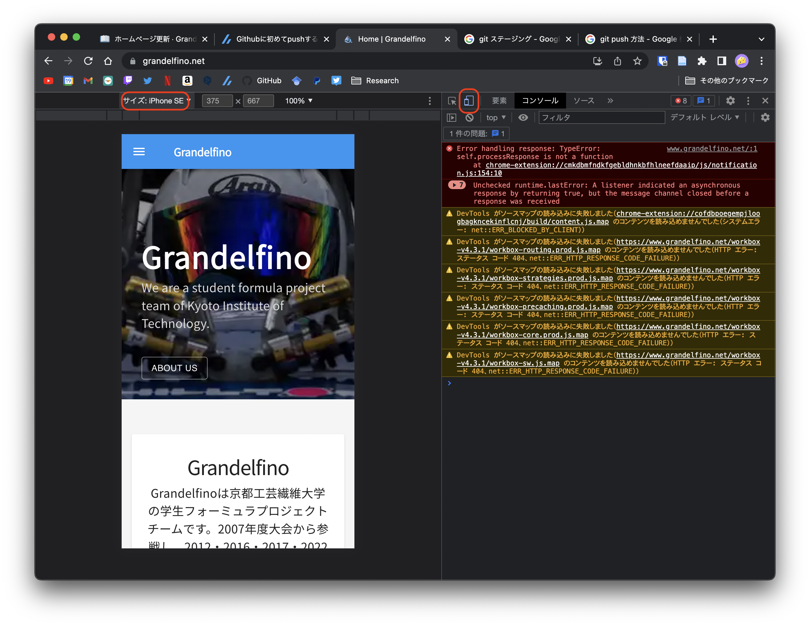

ホームページ編集
Contentfulで編集できないところの修正を行うときのページ
先ずは，環境構築からホームページをローカルで表示できるようにしてください
ページの編集を行う場合は，それと対応する.jsファイルを編集します．
ファイルの場所はsrc/pages/*.jsにあります．
$ git clone https://github.com/Grandelfino/homepage && tree ./homepage -L 2
.
├── Dockerfile
├── README.md
├── config
│ └── site.js
├── docker-compose.yml
├── gatsby-browser.js
├── gatsby-config.js
├── jsconfig.json
├── netlify.toml
├── package-lock.json
├── package.json
└── src
├── components
├── images <- 画像を入れるフォルダ
└── pages <- 各ページを記述しているフォルダ
ファイルとページの対応
- トップページ - pages/index.js
- チーム紹介 - pages/about_us.js
- 大会成績 - pages/history.js
- メンバー - pages/member.js
- お問い合わせ - pages/contact.js
- スポンサー一覧 - pages/sponsor.js
- スポンサーシップについて - pages/sponsorship.js
- FormulaSAEについて - pages/about_SAE.js
- 静的審査 - pages/static.js
- 動的審査 - pages/dynamic.js
変更を反映する
GitHubのmainブランチを更新すると自動的に反映されます．
mainブランチを更新するには，変更をステージングし，コミットを行い，それをGitHubにプッシュします．
git add . #変更をステージング
git commit -m "some messages" #コミットの作成
git push #GitHubに送信
初回Pushの際はGitHubにログインする必要があります
この辺の説明はGoogleでgit push 方法などで調べるといくつか記事が出てくるので参考に
変更を反映する時は必ずGoogle Chormeなどのブラウザで表示をチェックすること． また，F12で開発者ツールを用いてスマートフォン用の表示に切り替えると小さい画面の表示も確認できる
